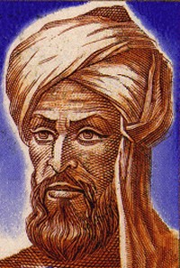
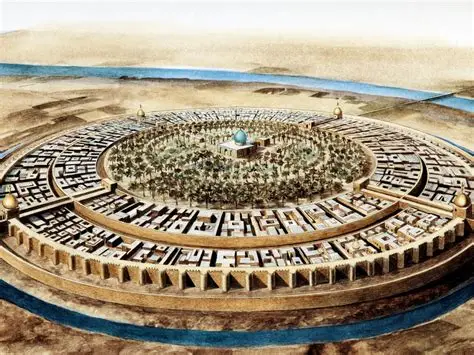
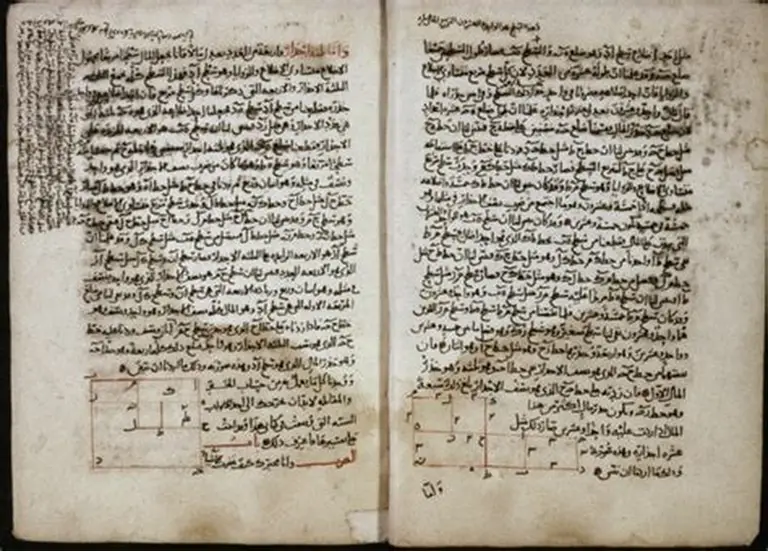
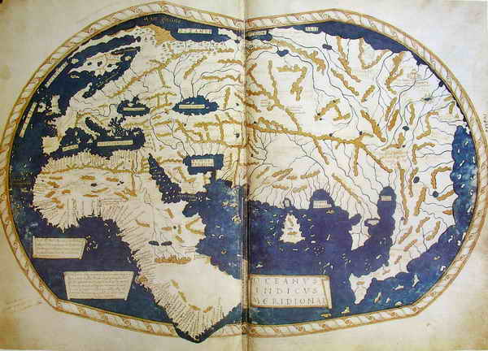
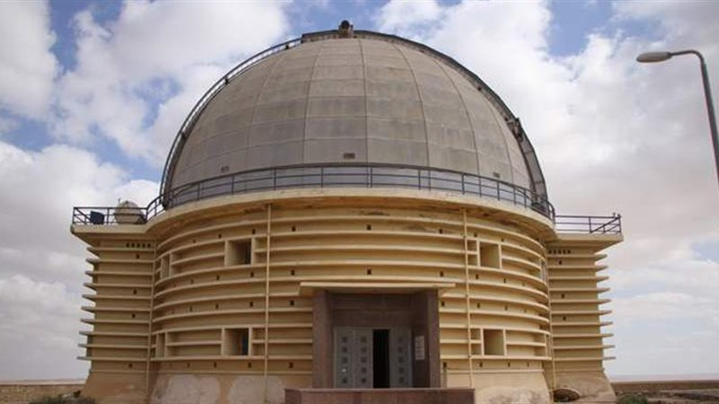
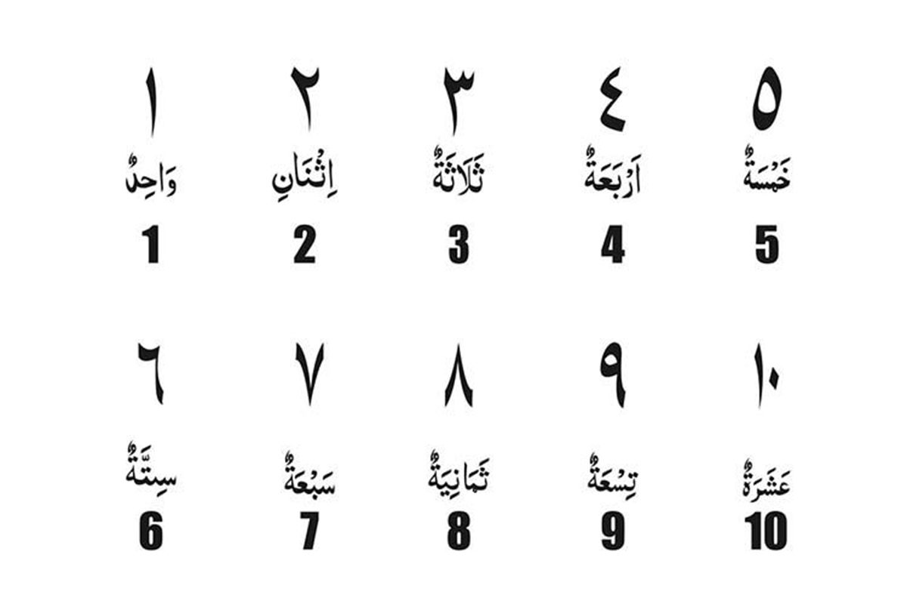
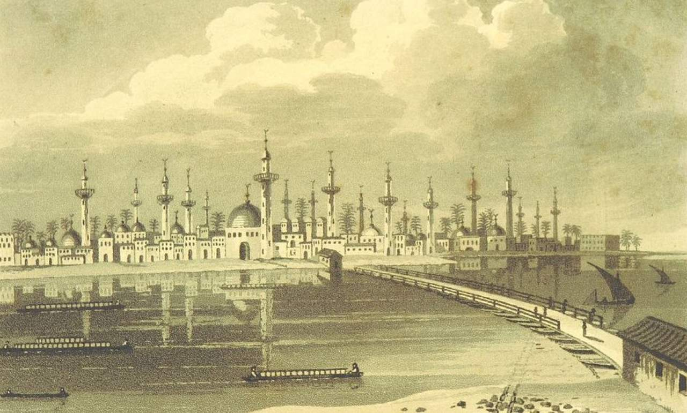

780 M — 850 M

Abū ʿAbdallāh Muḥammad ibn Mūsā al-Khwārizmī
± 780 M — Khawarizm, Uzbekistan
± 850 M — Baghdad, Irak
Islam
Matematika, Astronomi, Geografi, Algoritma
Bayt al-Hikmah (Rumah Kebijaksanaan), Baghdad
Bapak Aljabar, Pelopor Algoritma Modern
Muhammad bin Musa Al-Khawarizmi adalah seorang ilmuwan Muslim abad ke-9 yang lahir di Khawarizm (kini wilayah Uzbekistan). Beliau merupakan salah satu intelektual terbesar dalam sejarah peradaban Islam dan dunia, yang kontribusinya dalam matematika, astronomi, dan geografi telah membentuk fondasi ilmu pengetahuan modern.
Kata "Aljabar" berasal dari judul karyanya Al-Kitāb al-mukhtaṣar fī ḥisāb al-jabr wal-muqābalah, sementara kata "Algoritma" sendiri berasal dari latinisasi namanya: Algoritmi.
Muhammad bin Musa lahir di Khawarizm, sebuah wilayah yang kini dikenal sebagai Uzbekistan. Sejak kecil ia menunjukkan kecerdasan luar biasa dalam ilmu pasti.
Beliau pindah ke Baghdad dan bergabung dengan Bayt al-Hikmah (Rumah Kebijaksanaan) di bawah perlindungan Khalifah Al-Ma'mun, pusat ilmu pengetahuan terbesar di dunia saat itu.
Al-Khawarizmi menyelesaikan karya monumentalnya Al-Kitāb al-mukhtaṣar fī ḥisāb al-jabr wal-muqābalah — kitab yang melahirkan cabang ilmu Aljabar.
Beliau memperkenalkan sistem bilangan Hindu-Arab ke dunia Barat melalui karyanya tentang aritmetika, yang kemudian diterjemahkan ke bahasa Latin dan menjadi dasar matematika Eropa.
Al-Khawarizmi memimpin proyek pembuatan peta dunia pertama yang komprehensif, melibatkan lebih dari 70 ilmuwan, serta menyusun tabel astronomi (Zij) yang sangat akurat.
Al-Khawarizmi wafat di Baghdad, meninggalkan warisan intelektual yang hingga kini masih dirasakan oleh seluruh umat manusia dalam bentuk matematika modern dan ilmu komputer.
Kitab terpenting dalam sejarah matematika yang melahirkan ilmu Aljabar. Ditulis sekitar 820 M, karya ini membahas solusi persamaan linear dan kuadrat secara sistematis.
Karya yang memperkenalkan sistem bilangan Hindu-Arab (angka 0-9) ke dunia Barat. Terjemahan Latinnya menjadi buku teks matematika utama di Eropa selama berabad-abad.
Proyek ambisius pembuatan peta dunia komprehensif pertama yang melibatkan 70 ilmuwan. Memperbaiki koordinat geografis dan mencakup seluruh dunia yang dikenal saat itu.
Tabel astronomi yang sangat akurat mencakup posisi matahari, bulan, dan planet, tabel trigonometri, serta perhitungan kalender Islam. Menjadi referensi utama astronomi abad pertengahan.
Karya yang menerapkan matematika pada hukum waris Islam, memberikan solusi sistematis untuk perhitungan pembagian harta warisan sesuai syariat Islam.
Al-Khawarizmi juga berkontribusi pada pengembangan trigonometri dan pembuatan jam matahari (sundial), serta menjelaskan fungsi sinus, kosinus, dan tangen secara lebih lengkap.





